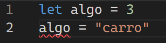
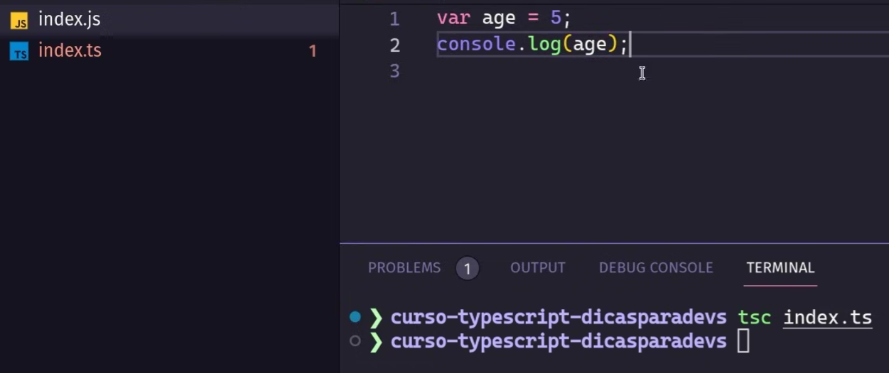
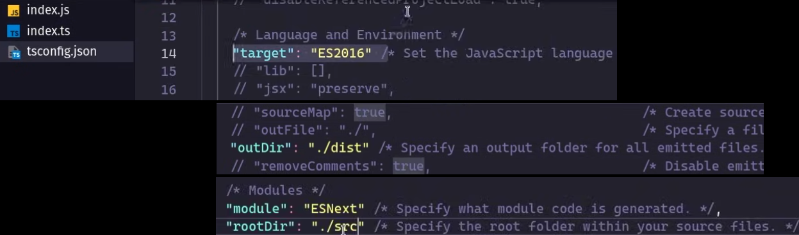

Typescript is a superset of JavaScript that adds static typing.
It helps catch type-related errors during development.
Typescript compiles to plain JavaScript, making it compatible with existing JavaScript code.

Inference
Typescript can infer types based on the values assigned to variables.
Type inference allows developers to write less code while still benefiting from type safety.
It can infer types for function return values, parameters, and more.

Compilation to JavaScript
To compile Typescript to JavaScript, you can use the TypeScript compiler (tsc).
Run the command `tsc yourfile.ts` to compile a single file.
For larger projects, you can set up a tsconfig.json file to configure the compilation process.
You can also set up a tsconfig.json file to configure the compilation process for larger projects.

Tsconfig.json
The tsconfig.json file is used to configure the TypeScript compiler.
It specifies the root files and the compiler options for the project.
Some common compiler options include target (the JavaScript version to compile to), outdir (the directory where compiled JavaScript files will be placed), module (the module system to use), rootdir (the root directory of the project), and strict (enabling strict type-checking options).
To use the tsconfig.json file, simply run the command `tsc` in the terminal while in the project directory.